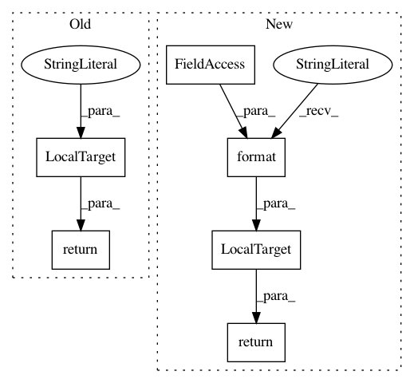

c9469fe6f125a2178ccafa904b8afe7ed64a0008,qanta/pipeline/preprocess.py,WikifierInput,output,#WikifierInput#,83
Before Change
shell("touch data/external/wikifier/input/_SUCCESS")
def output(self):
return LocalTarget("data/external/wikifier/input/_SUCCESS")
class WikifierOutput(Task):
def requires(self):
After Change
shell("touch {}/_SUCCESS".format(c.WIKIFIER_INPUT_TARGET))
def output(self):
return LocalTarget("{}/_SUCCESS".format(c.WIKIFIER_INPUT_TARGET))
class WikifierOutput(Task):
def requires(self):
In pattern: SUPERPATTERN
Frequency: 3
Non-data size: 6
Instances
Project Name: Pinafore/qb
Commit Name: c9469fe6f125a2178ccafa904b8afe7ed64a0008
Time: 2016-08-24
Author: ski.rodriguez@gmail.com
File Name: qanta/pipeline/preprocess.py
Class Name: WikifierInput
Method Name: output
Project Name: Pinafore/qb
Commit Name: c9469fe6f125a2178ccafa904b8afe7ed64a0008
Time: 2016-08-24
Author: ski.rodriguez@gmail.com
File Name: qanta/pipeline/preprocess.py
Class Name: WikifierOutput
Method Name: output
Project Name: Pinafore/qb
Commit Name: 9d50126a19a11d0fa31359b4a489af9ef567e8be
Time: 2016-11-30
Author: ski.rodriguez@gmail.com
File Name: qanta/pipeline/__init__.py
Class Name: Reports
Method Name: output